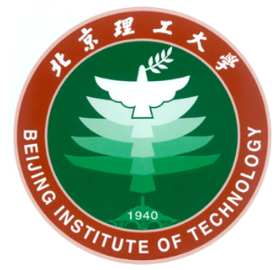

本科生, 中共预备党员 |
本人目前在北京理工大学计算机学院就读本科，专业为计算机科学与技术，已确定保研北京理工大学，将在2023年入学攻读北京理工大学计算机科学与技术硕士学位，师从李国政老师。本人目前已在北京理工大学智能信息技术实验室开始进行相关的研究工作。
我的研究兴趣主要包括: 数据可视化，自然语言处理分析，人机交互 等。
|  | 硕士 北京理工大学 (2023.9 ~ 2026.6)
|
本科 北京理工大学 (2019.9 ~ 2023.6)
|
等待更新...
暂无
骑行、吉他、桌游、明日方舟、王者荣耀
同好可以一块玩~~~~